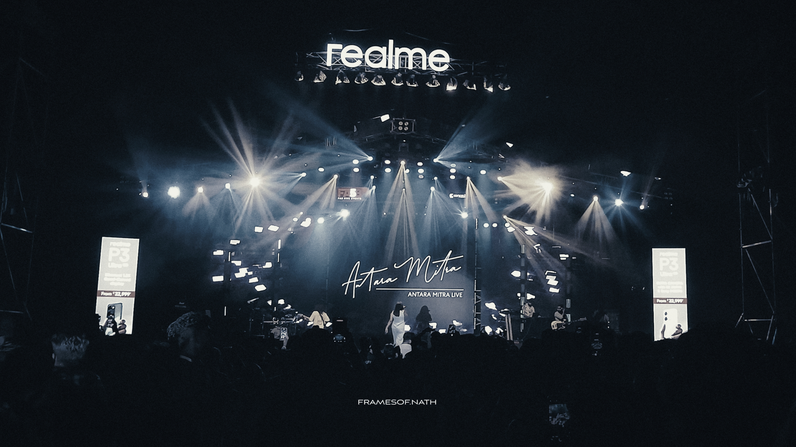

PROJECTS
← Back to HomeCreative Showcase
Explore visual stories crafted through photography and videography.
Photography Showcase
Curated selection of my best captures—from moody portraits to vibrant landscapes.


ADVYKA
Through the Techno-Cultural fest of College of Engineering Perumon ADVYKA
View Full Gallery →
Videography & Reels
Short-form video content, cinematic edits, and dynamic storytelling projects.

My Editing/Videography Works
Capturing life the way it feels, not just the way it looks
Watch My works on Insta →